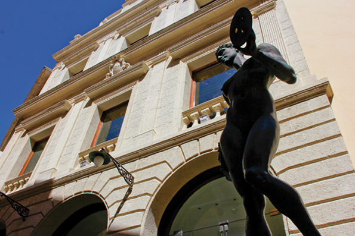

Maó. La llegenda de la ciutat sense vida
 Diuen les males llengües que el port de Maó fou l'escenari d'una capitulació infame quan, al segle XVI, concretament l'1 de setembre de 1535, el tristament famós pi-rata Barba-rossa entrà en la rada maonesa i es plantà davant la ciutat (que llavors era una vila de comerciants amb escàs esperit militar) i en només tres dies de setge intentaren parlamentar. Segons aquesta particular llegenda negra, Barba-rossa hauria exigit el saqueig de la vila i l'entrega dels seus habitants com a captius, prometent respectar deu cases assenyalades. Un cop els turcs abandonaren Maó, el lloctinent i els jurats de Ciutadella capturaren les autoritats maoneses i les acusaren de traïció, que sempre queda millor que acceptar una derrota de la qual també eren responsables. Vint-i-tres anys després els otomans tornaren a Maó, però foren repel•lits per l'artilleria de l'incipient fort de Sant Felip i marxaren a Ciutadella, en-cara que aquesta és una altra història...
Diuen les males llengües que el port de Maó fou l'escenari d'una capitulació infame quan, al segle XVI, concretament l'1 de setembre de 1535, el tristament famós pi-rata Barba-rossa entrà en la rada maonesa i es plantà davant la ciutat (que llavors era una vila de comerciants amb escàs esperit militar) i en només tres dies de setge intentaren parlamentar. Segons aquesta particular llegenda negra, Barba-rossa hauria exigit el saqueig de la vila i l'entrega dels seus habitants com a captius, prometent respectar deu cases assenyalades. Un cop els turcs abandonaren Maó, el lloctinent i els jurats de Ciutadella capturaren les autoritats maoneses i les acusaren de traïció, que sempre queda millor que acceptar una derrota de la qual també eren responsables. Vint-i-tres anys després els otomans tornaren a Maó, però foren repel•lits per l'artilleria de l'incipient fort de Sant Felip i marxaren a Ciutadella, en-cara que aquesta és una altra història...
Tot i que la versió de la traïció ha estat desmentida per historiadors solvents que han demostrat que Maó mancava de defenses i guarnició militar i no va tenir cap altra més alternativa que la capitulació en ser enderrocades les seves murades, la llegenda de la presumpta covardia dels maonesos en contraposició al coratge cívic dels habitants de ponent, quan anys després van ésser envaïts pel sarraí (fet que alguns pròcers ciutadellencs aprofitaren per fer-se amb les terres dels captius de Constantinoble), ha gravitat històricament sobre l'honorabilitat del poble maonès i, possiblement, sigui el germen de la tradicional rivalitat entre els dos pols de l'illa.
 Amb el temps, Maó i el seu port foren ponderats més objectivament per invasors més civilitzats, els britànics, que convertiren la ciutat en la capital de l'Illa, enviant els molestos clergues a ponent, on feliçment encara continuen. Els fills de la Pèrfida Albió sí que captaren la magnificència del port maonès i l'especial idiosincràsia de la seva gent, tan hospitalària i poc donada a aventures com exempta de fanatisme religiós i amant de la cultura i el comerç lliure. En general, els britànics s'avenien amb els maonesos, amb qui confraternitzaven en els literaris casalots senyorials del carrer Isabel II, burlant-se, en un supòsit, de la concentració de clergues per metre quadrat en la ciutat de Ponent i les berganteries de la Santa Inquisició de què Men-orca es lliuraria durant aquell mateix segle.
Amb el temps, Maó i el seu port foren ponderats més objectivament per invasors més civilitzats, els britànics, que convertiren la ciutat en la capital de l'Illa, enviant els molestos clergues a ponent, on feliçment encara continuen. Els fills de la Pèrfida Albió sí que captaren la magnificència del port maonès i l'especial idiosincràsia de la seva gent, tan hospitalària i poc donada a aventures com exempta de fanatisme religiós i amant de la cultura i el comerç lliure. En general, els britànics s'avenien amb els maonesos, amb qui confraternitzaven en els literaris casalots senyorials del carrer Isabel II, burlant-se, en un supòsit, de la concentració de clergues per metre quadrat en la ciutat de Ponent i les berganteries de la Santa Inquisició de què Men-orca es lliuraria durant aquell mateix segle.
Quina és, doncs, l'essència de la “maonesitat”? Segons Oliago Pons, personatge de ficció i protagonista de les Festes de Gràcia fa un parell d'anys, Maó és la ciutat més interclassista que existeix sobre la Terra, ja que tots han anat a les mateixes escoles a compartir idees, al mateix hospital a mesclar fluids i vapors, i estan especialment inclinats a alternar sense distinció de classes. Els maonesos - digué Oliaigo en el seu pregó de festes - no són agosarats, ni busca-raons, ni somiadors, sinó que es conformen amb “una cosa que estigui bé” però, tot i així, sempre s'han sabut moure i crear un gran entramat empresarial (emprenedors a la manera antiga, sense necessitat de coaching), com l'antiga Industria Fabril Mahonesa, l'Anglo-Española de Motores i la llavors en augment indústria dels moneders de plata. Més endavant, les sumadores, la bijuteria, el calçat i l'esplèndid formatge, la denominació d'origen del qual llueix el nom de la ciutat hermosa y galante, com resa el seu delirant però entranyable himne.
Però no pot entendre's la “maonesitat” sense apel•lar al seu esperit il•lustrat d'un segle XVIII en què la presència anglesa i francesa va possibilitar que els estudiants maonesos es posessin en contacte amb Europa, que citant el “vell professor” Her-nández Mora (segons recull el magnífic llibre Maó de Josep Maria Quintana, un altre intel•lectual genuí), es notà exclusivament a Maó, la fama de ciutat liberal i culta de la qual té sòlids fonaments: un Ateneu focus de debats i conferències, l'Orfeó Mao-nès en teatre, el mateix Teatre Principal, on mai s'han deixat de representar òperes de primera qualitat gestionades pels Amics de l'Òpera, les Joventuts Musicals, els Amics de l'orgue de Santa Maria, el Museu de Menorca, la col•lecció Hernández Mo-ra, la Biblioteca pública...
Però Maó és el seu port, possiblement el més bell de la Mediterrània, veritat revela-da i, per tant, no negociable pels maonesos. Quan arriba el bon temps, en la seva vorera s'hi passegen i relacionen moll amunt i moll avall, segons el popular joc de paraules, mentre que durant l'hivern ho fan preferentment en els seus carrers, els dissabtes al matí, ja que Es Carrer Nou i S'Arravaleta (als quals se'ls han afegit Ses Moreres i Sa Costa de sa Plaça darrerament) es converteixen en fòrums socials bas-tant més entranyables que els d'Internet.
 A causa de la seva inusual intensitat, la seva activitat cultural, en la qual se succe-eixen les exposicions pictòriques, conferencies, fòrums, representacions operístiques o temporades de cine-club entre d'altres, li dóna a la ciutat una vida que no tan sols desmenteix la llegenda de ciutat esmorteïda tan estesa pels nostàlgics dels seus llocs d'origen, sinó que posa a prova al portador d'una mínima inquietud cultural per seguir la peculiar gimcana de cada cap de setmana. Això sí, la vida maonesa s'ha de prendre en calma per tal de no sortir-se del carril d'una pausada cadència de vida, i no cal fer-ne professió de fe. No cal esforçar-se per ser un bon maonès, doncs, que no som ni patrioters ni excloents. És suficient amb deixar-se endur.
A causa de la seva inusual intensitat, la seva activitat cultural, en la qual se succe-eixen les exposicions pictòriques, conferencies, fòrums, representacions operístiques o temporades de cine-club entre d'altres, li dóna a la ciutat una vida que no tan sols desmenteix la llegenda de ciutat esmorteïda tan estesa pels nostàlgics dels seus llocs d'origen, sinó que posa a prova al portador d'una mínima inquietud cultural per seguir la peculiar gimcana de cada cap de setmana. Això sí, la vida maonesa s'ha de prendre en calma per tal de no sortir-se del carril d'una pausada cadència de vida, i no cal fer-ne professió de fe. No cal esforçar-se per ser un bon maonès, doncs, que no som ni patrioters ni excloents. És suficient amb deixar-se endur.